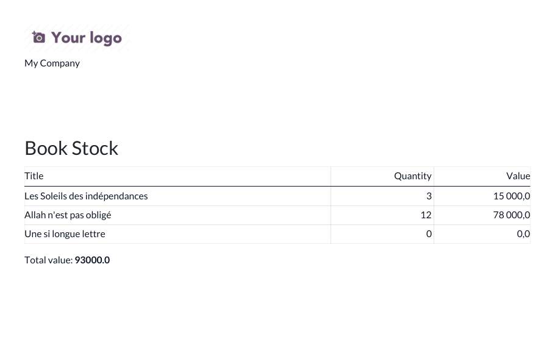

<section class="oe_container">
    <div class="oe_row oe_spaced">
        <h2 class="oe_slogan">Odoo Snippets Demo</h2>
        <h3 class="oe_slogan">Antisèche Odoo 18 commentée, sous forme de module installable</h3>
        <p>
            Champs calculés stockés et non stockés, onchange, contraintes Python et SQL, assistant,
            action planifiée, rapport QWeb, héritage de vue et appel XML-RPC : chaque exemple est
            commenté en français et couvert par un test.
        </p>
        
    </div>
</section>
